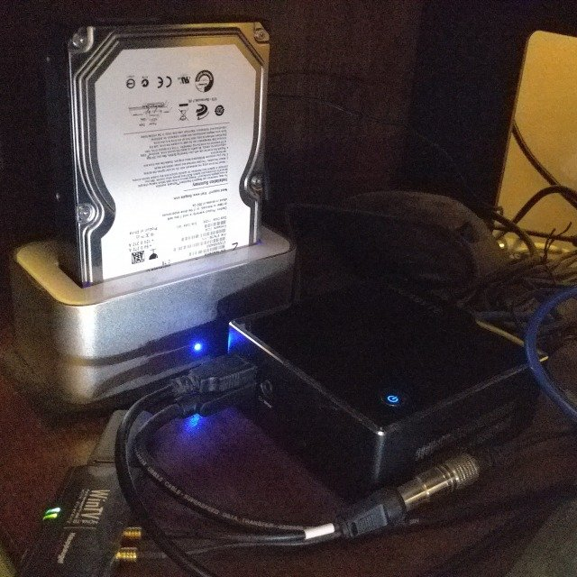
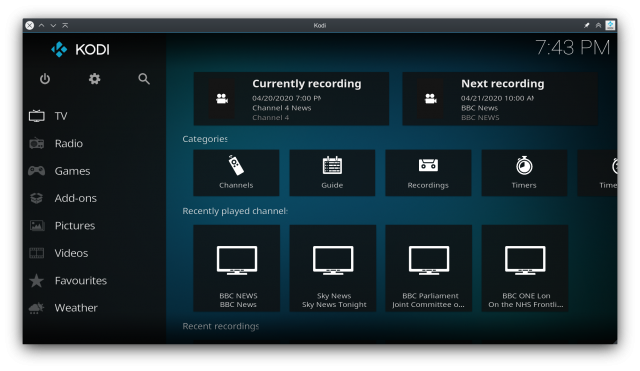
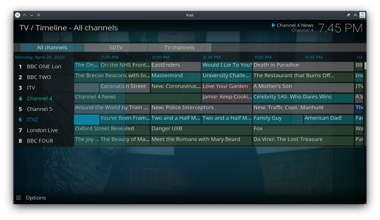
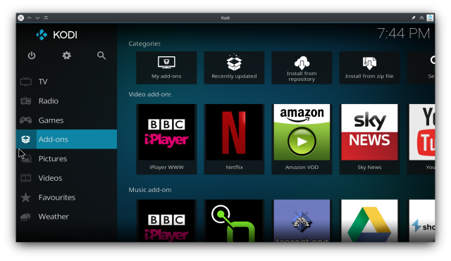
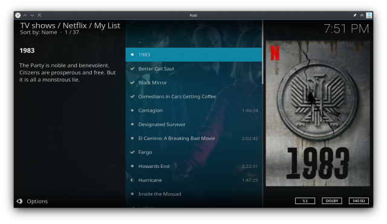
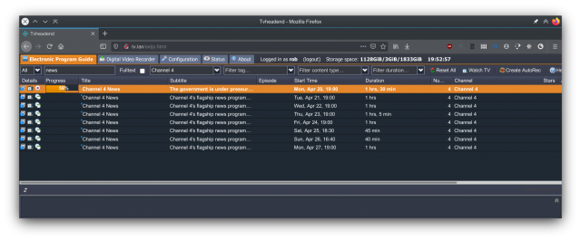
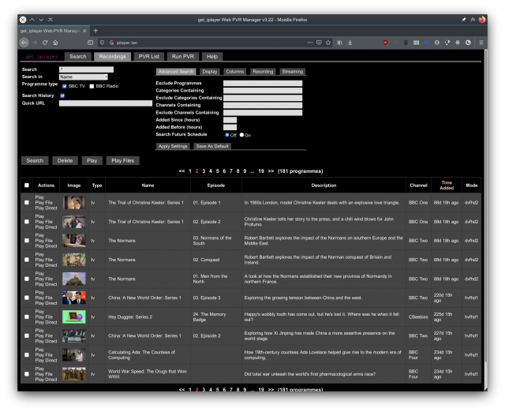

I first built a Linux home theatre PC around 2005 and I've had one ever since. At first I used MythTV and it was all about recording and transcoding OTS (over-the-air) broadcasts, in the days before online streaming services had caught on (and way before offline downloads). These days that's still a part of it, but having a powerful PC in the living room offers so much more now.
Hardware
From a hardware perspective it's never been easier. I've been through a couple of full-sized ATX chassis and battled with noisy drives and PSU fans. Today I have a small fanless core i3 NUC with a fast internal SSD for the OS (Ubuntu LTS). Beside the NUC in an external enclosure is a large hard disk used for media cache storage. The whole setup is small, quiet and relatively cheap with acceptable performance. A USB twin-tuner provides OTA broadcasts. In the increasingly unlikely event that I need an optical drive, I can plug in a USB unit. This all sits in a cabinet under the television, connected to the TV by HDMI and wired to a gigabit switch.

Although consumer drives tend to die quickly when used like this I'm not really worried about resilience here. I have a stack of retired disks from old builds that I no longer need, so this is a good way to use them up. When a disk eventually goes after a couple of years, I bin it and plug another. It's just TV shows after all - if there's something I want to keep long-term I back it up to the NAS.
Software
On the software side I've moved from a MythTV backend to TVHeadend. On clients (including the main box) I use Kodi as a frontend. MythTV was great in it's day, but breaking changes with most releases and the need for a consistent version on each client really tainted the experience. Development now seems to have stagnated. When I switched to TVHeadend and Kodi a few years back it was a revelation, they are much easier to setup and very low maintenance.
Rationale
The obvious question is why do this? Smart TVs are becoming the norm, set-top boxes are cheap and both these options can provide FreeView and/or streaming services. Why on earth bother with an HTPC? Well, I have a reasonably current smart TV and I've acquired a few set-top boxes (sometimes it takes a while before new services are available on Linux). These are my reasons - off-the-shelf appliances may answer some of these, but I've yet to find one that covers everything:
-
Live OTA (over-the-air) TV anywhere
- Transcode and stream live over-the-air Freeview TV to any computer or mobile device in the house.
- Pause and record live OTA TV. My system has a dual tuner that allows me to watch or record two channels concurrently.
- Watch abroad. I can log in through my VPN and catch a Rugby match.  
-
Streaming services
Amazon, Netflix, BBC iPlayer, ITV Hub, Sky News are the ones I use and there are many more. See my add-on list at the foot of this post.



- Recording I got really tired of streaming services telling me "this program/download is no longer available". When I record and transcode myself, I decide when the recording expires. My OTA recordings are automatically transcoded on the box as soon as they complete, from transmission format (MPEG-2) into H264/MPEG-4.
-
Remote control
Remote controls for smart TVs and set top boxes are woefully inadequate for the task. Entering usernames and passwords using a TV type remote control is a pain, as is searching YouTube and the web. There are a multitude of ways to control and interact with an HTPC:
- A choice of iOS and Android remote apps to control the PC, Kodi, TVHeadend.
- Wireless keyboard with trackpad.
- Run the Kodi client itself on an Android device or laptop.
-
Interact using web apps in a browser.
Yatse Android Remote control app with (A) swipe touchpad for gestures (B) navigation shortcuts in the app menu (C) addon-specific interfaces (D) integration with Android sharing interface for casting video from android apps such as YouTube KDE Connect app for Android. Paired with GSConnect, use your Android phone as mouse and keyboard for the HTPC Official Kodi remote app for iOS TVHGuide, TVHeadend client for Android (video stream in MXPlayer) TvhClient, TVHeadend client for iOS Logitech keyboard
- UI/UX Both the Gnome Desktop and Kodi on my HTPC have a customisable interface and a snappy UI with no lag. The box is powerful enough to load add-ons and streaming services quickly.
- Extension with add-ons You can turn your TV into a giant smart picture frame when not in use, browse your online filesharing and gallery services, play games, get news and weather, stream foreign channels, create dashboards... See my add-on list at the foot of this post.
- Consolidation of hardware At one point I had an Apple TV, Fire TV stick, NowTV box and a Roku. Mostly the reason was that some shows were available through one service, others through another. Sometimes I wanted to be able to watch a service in more than one room in the house, so I'd need two set-top boxes. Each box needs it's own power supply and remote control; it's wasteful and it's a mess. With an HTPC I can access all the services I use through one device, with a single remote control and power supply. My own music and videos can be played using the same interface and I am never told they use an "Unsupported Codec".
- Bandwidth This has become less of an issue since we moved to fibre broadband, but it's still a good idea to use as little of the available bandwidth from your ISP as possible. When I stream Live TV from the HTPC to other devices in the house, this only uses the local LAN. Watching the same channel through an internet streaming service reduces current available bandwidth and deducts from our overall data allowance.
-
Storage
As mentioned above, I have a stack of disks to use up.
- When I do need a new disk, either due to failure or need for higher capacity, I can upgrade easily.
- Set top box manufacturers tend to charge a premium for storage, I pay the market price for a bare disk.
- I can use spare disks from retired systems.
- Upgrades When you buy almost any "appliance" compute device now, you can expect it to be actively developed for a year or so and maintained for maybe a year after that. My current HTPC receives regular software updates and performs well. I bought it around 4 years ago and expect to get as much again out of it. It's running fine at the moment with a mere 4GB of RAM and will take at least another 12 if performance starts to degrade. If new services come on the market, I'm confident the community will provide add-ons for Kodi as they have in the past. No built-in obsolesence here.
-
Additional services
Anything that runs on a Linux PC can be run on this box.
- We use the Chrome browser to view our baby monitor on the big screen .
- The get-iplayer software for recording BBC iPlayer shows runs as a background service, with a web interface served via Apache.  
- I used the box as a Steam console for a time.
- GSConnect connects with my phone and automatically pauses playback on the TV when I receive a call.
My Add-Ons
- Streaming services: Amazon, Netflix, BBC iPlayer, ITV Hub, TVP (Polish TV)
- News: BBC, Sky
- Audio: Radio.net, BBC iPlayer, icecast.org, shoutcast, Calm Radio
- Screensavers: Plugin Slideshow, Multi Slideshow Screensaver, Google Earth screensaver
- Picture Addons: Google Drive, Piwigo
- Non-Kodi: get-iplayer service